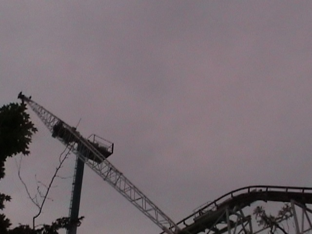

PNE Playland isn't exactly a well known amusement park. Very few enthusiasts pay much attention to the park, and while it's not off the beaten path, it's certainly not in an area that many roller coaster enthusiasts visit. PNE Playland is mostly a local park for the people of Vancouver. From looking at it from a first glance, the park doesn't look very special at all. It just looks like another typical local park that's only worth whoring for about an hour or two. And for the most part, it really is that way. The park has absolutely no theming whatsoever, all the rides are just plopped down on asphalt, and the entire park just has a sort of carnival atmosphere that feels like it's a permanent year round carnival. In fact, Vancouver hosts it's PNE Carnival right at PNE Playland where they literally just add more rides, and that's when most of the Vancover residents visit PNE Playland. When the carnival is part of the park. Now, so many of you are thinking "PNE Playland doesn't have much to offer other than a few crappy credits in a distinct faraway place not near any other amusement parks. This must be a credit whore park." WRONG!!!!!! While the park may have absolutely no atmosphere and feel like a permanent carnival, they are in fact home to one of the best wooden coasters ridden by Incrediblecoasters. Coaster is worth the admission to the park alone and is a ride you can ride over and over and over again. Yes, Coaster is so good that it is among the awesomeness of Outlaw Run and El Toro. No, I did not make a mistake. Their wooden coaster is as good as coasters such as Outlaw Run and El Toro. And hell, even besides Coaster, many of the other rides are fun rides that are worth a spin. And though they may be ordinary flats, they run better programs than many other well known parks. It is totally worth a visit if you are ever in the Vancouver area. Do not pass this park up despite what you might think at first glance.
Here are the reviews of all the Flat Rides at PNE Playland. Now while the park doesn't necesarrily have many unique flat rides, it does have a lot of flat rides to ride. And during the fair, they get even more flat rides, but for now, we'll just focus on the year round flat rides at PNE Playland. The best of the year round flat rides that I rode was Hellevator. This is the parks space shot. I personally found it to have an extremely weak program and be on the low end of the Space Shot Spectrum. But hey, it was still a fun ride. So that's a big plus. The next best flat ride I rode at PNE Playland was the Waveswinger. Nothing special. Just ordinary Chairswings. Nothing to report about it. I also rode the Ferris Wheel so I could get some fantastic shots of PNE Playland and of Vancouver. While those were nothing special, I did the skyscraper, though that was an upcharge. But still. It was by far the best flat ride I rode at PNE Playland. While the Skyscraper wasn't nearly as intense as most people make it out to be, it still is a fantastic ride, mostly because it's really really fast, and that makes it very fun. PNE Playland also has a frisbee, an enterprise, a top spin, a breakdance, a pirate ship, a music express, a troika, a scrambler, and bumper cars. And since my last visit, PNE Playland got a Starflyer (that should give one hell of a view of Vancouver) and this one flat ride called Beast. Apparently, it's the first of its kind in North America, and it seems to be a sort of giant frisbee that swings beyond 90 degrees, but...apparently, it's not just another frisbee. Hard to see. I'll just have to ride it myself and see how it is.

It may be an upcharge, but dammit, it's worth it!!! (At least if it's your first time, it is.)
Water Rides
PNE Playland isn't exactly a great destination for water rides. The only water ride that PNE Playland is home to is a log flume. And it's not exactly a good log flume either. It doesn't do much, has no atmosphere, and feels like it came right out of RCT1. But hey. It's still a log flume. And it does a better job of cooling you off than Jet Stream does, so I guess it does its job to cool the people of PNE Playland off.
Not a high quality log flume.
Dining
I did not eat at PNE Playland.
Theming and Other Attractions
Here are the reviews of all the other stuff at PNE Playland. Well, for theming, PNE Playland has asphalt! Lots and lots of lovley asphalt. Oh, it just brings so much atmosphere into the park. I love all the asphalt at PNE Playland (End Sarcasm Mode). So yeah. PNE Playland doesn't have sh*t for theming. Though I do really like it's setting in Vancouver. It does give you a great view of the city from the Ferris Wheel, Hellevator, and their Starflyer. And as for other stuff to do, well, I didn't really find anything else in PNE Playland to do. It's literally just a bunch of rides and a couple coasters plopped down on some asphalt. I'm sure they add a lot of stuff to do during the PNE Fair, but that's only during a few weeks of the year. Really, if you want to do other stuff besides riding rides, just leave the park and visit Vancouver. It's a great city that everyone should visit sometime in their life.
In Conclusion
So yeah. You can get an idea of what type of a park PNE Playland is. While it's not a high quality amazing theme park, it's still a fun park to visit. It may have absolutely no atmosphere whatsoever to the park, but hey. This place has one of the greatest wooden roller coasters that we have currently ridden. That alone should make every enthusiast put PNE Playland on their to do list. Coaster is really worth it. It is really really worth it.
Enthusiast FAQs.
*Are there kiddy coaster restrictions? - No. Neither Kettle Creek Mine nor Bug Whirled have any restrictions.
Tips
*Get multiple rides in on Coaster. It is f*cking amazing despite it's small size.